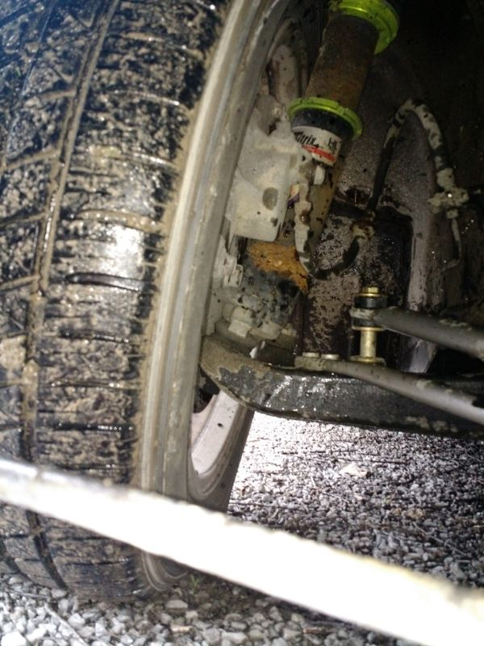
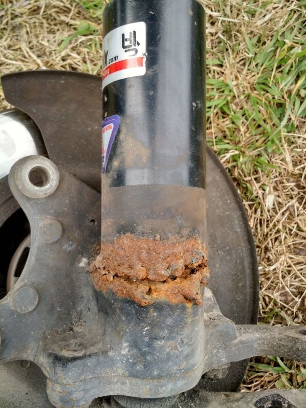
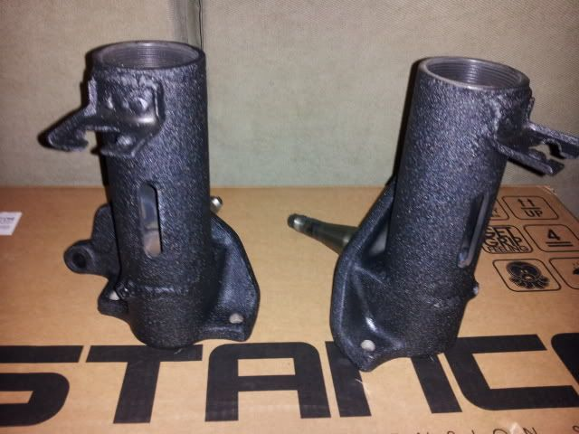
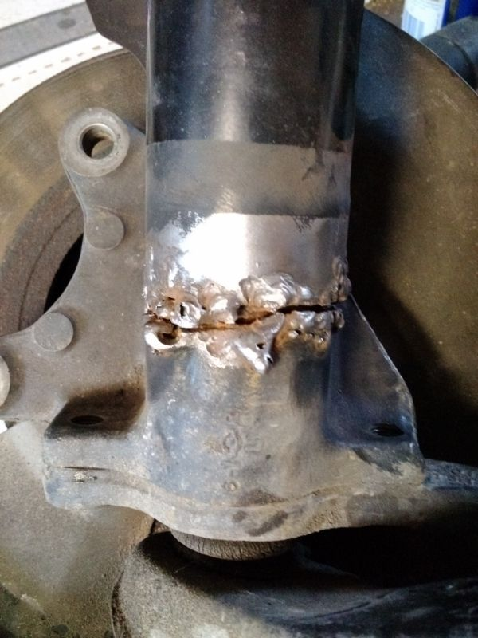
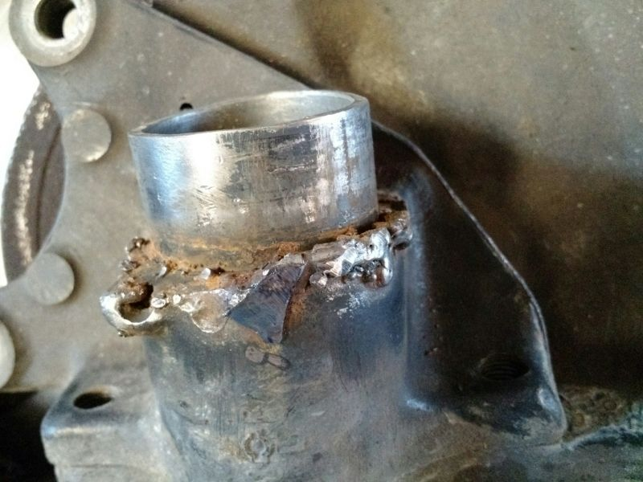
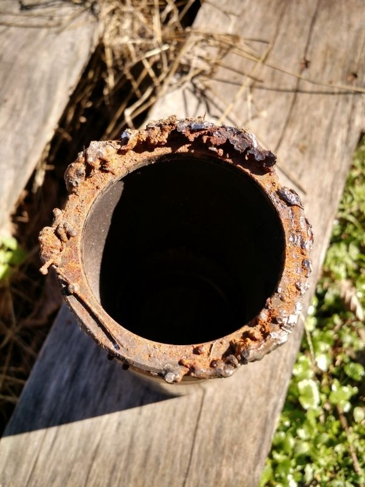
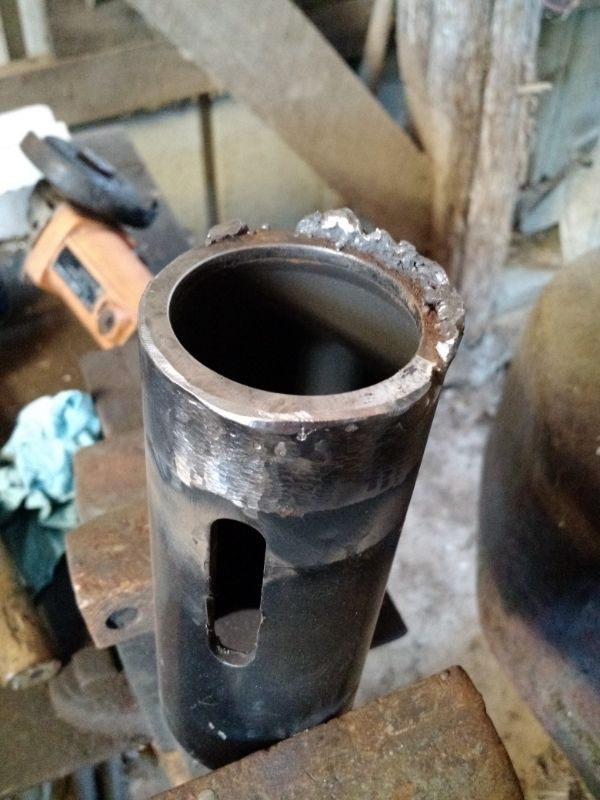
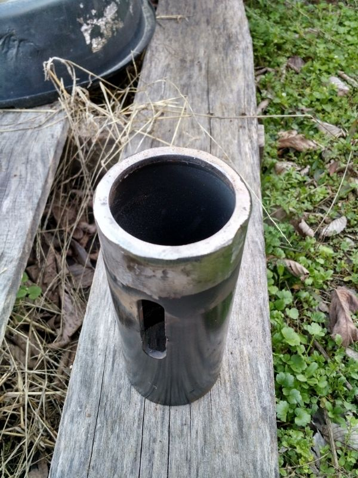
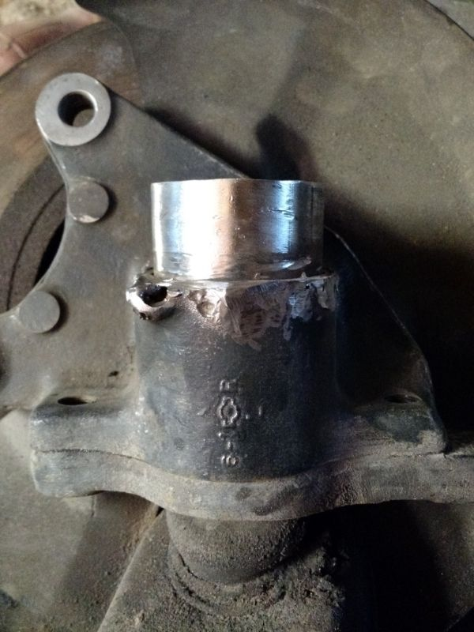
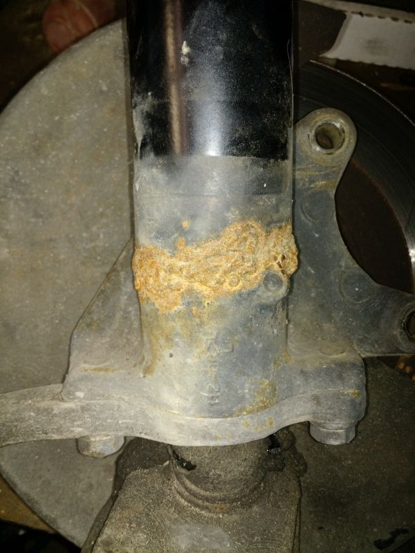

-
I spoke out of turn when I said it was a Lincoln. Found out last night that it is actually a Chicago Electric Mig 151. I believe these are Harbor Freight welders? I'm headed out to get the new regulator now. I'll post some pictures of the before and wherever I happen to end up tonight when I stop for the night.
I plan on taking this as slow as I can afford to. I have until Wednesday because thats when my new tie rod ends come in. Noticed the threads are messed up on the driver side so I ordered new ones. I plan on just doing all the prep tonight and getting them back to their base point and welding tomorrow. I should have enough time today to get all that done.
G-E, Thanks for the photo of the gusset. Did you lay it on top of the spindle or butt it up to the side. If I'm correct in what I know about welding shouldn't I put it about half way on the spindle so I have a nice little channel to weld into? Then make a pass on the underside before putting the threaded tube on the spindle?
Spooledup, believe me I'm scared too. I've welded before but nothing like this.私♥フェアレディ・ゼット
・1984 300zx N/A -
Yep Chicago electric is Harbor freight. Do you have a torch to preheat?87T, My build thread http://z31performance.com/forum/z31-…lee-s-87t-rb26 -
Make some passes on some scrap of similar thickness to get your settings dialed in.
Be nice and comfortable at your welding table / or whatever your using. Make "dry" passes with the welder turned off to work out your angles and how far you are going to go each time.
All of that is part of the prep, remember you are preparing yourself as much as you are preparing the metals to be welded.85 Turbo Slick Top
__________________________________________________ _____ -
heat, angle and travel speed.
1988 300ZX Turbo, Shiro Special #760
1988 300ZX Turbo Automatic (wife's car)
1991 Hard-body 2WD
http://zccw.org/zccw/?page_id=1215 -
It's on top of the edge, I hoped my little blobs would represent weld beads ok :POriginally posted by Raven View Post
Mine doesn't point upward as seen from the wheel side, but being at an angle helps triangulating, the high point on the forward edge is about 90 degrees apart from the low point on the sleeve… -
Ok I see what you mean G-E. Hopefully I have good luck with mine.
I'm going to get some 1/8 tomorrow for the gussets and use some of that for practice. I do have access to a torch. Small propane all the way up to an oxy acetylene torch. I didn't get much done tonight because I went to check my workspace and make sure I didn't need anything else while I was at harbor freight.
Shop was a wreck so I spent a few hours cleaning it up so I would have room to move. Also discovered only one of the florescent lights work currently so I had to pick up some double halogen floor lights. Managed to get everything cleaned up and ready for work though. Also got the broken coilover on the table. It suffered total weld failure. 1 hit with a rubber mallet and it will move.
I have to figure out how I'm stripping the spindle. Need to get the control arm off and the two bolts won't budge. Going to try the impact in the morning but our compressor is worn out so we will see how well it works.
Well as promised I can atleast show you some pictures of what I have to work with. I'm embarrassed this was even on my Z.

You can see from the tire angle how far it went when the welds let go. I think the height that we left the original tube is the only reason it didn't completely come apart on me. You can also see where the locking nuts cut some nice grooves into the tire. For reference I had it set at -3 degrees camber. Now for the close up. If you have a weak stomach you can look away now…

Sorry If the pictures are too large. I resized them but photobucket has been weird for me lately.私♥フェアレディ・ゼット
・1984 300zx N/A -
Probably not what you want to hear, but honestly I'd scrap that… that needs some machining to make right again :\
The only other viable solution would be my coilover adapters because they sit inside the tubes, so that mess would be largely irrelevant, the major hurdle is you'd need my adapters, plus s13 brackets from powertrix
You'd be down for weeks....
So the unenviable choice you have is to make it work:
- grind down the sleeves to be round, then bevel the lower edge
- grind the spindle around the old tube further down to create a new surface free of weld damaged metal (probably 1/8th will do)
- weld the sleeve back on
- weld a strap around the whole back/inner side like a patch, making sure it overlaps by say 1/2" and therefore your weld doesn't overlap the first sleeve weld
- add the gusset on the outer side to add dimensional strength
- dunk the whole thing in enamel rust paint :P
PS. you'll have to make sure the sleeve is welded exactly the same angle as the other, so it's not as easy as my instructions sound, measure 13 times in every direction, with the other "good" spindle nearby for verification -
Whoa… yep you have your hands full on this repair, seems like after the first break the spindles were welded in place with little to now prep work.
Lack of penetration is an understatement… Grind all of 'that' off and see what you have to work with.
Please post before pics after your prep work, so that we can see what metal is left to weld.87T, My build thread http://z31performance.com/forum/z31-…lee-s-87t-rb26 -
Yours should have come out looking like this

These are professionally tig welded and powder coated86na2t + holset
feedback
viewtopic.php?f=18&t=6114&hilit=andrew+gardner -
I hate to say this but yes they need to be scraped. No wonder the other welders said no, and for good reason.
1986 300ZX Turbo…sold
1990 Skyline GT-R…new money pit
2014 Juke Nismo RS 6-speed…daily -
Originally posted by NissanEgg View Post
I agree, those are FUBAR.
1988 300ZX Turbo, Shiro Special #760
1988 300ZX Turbo Automatic (wife's car)
1991 Hard-body 2WD
http://zccw.org/zccw/?page_id=1215 -
Yes, I agree they are fubar. However, they are all I have. When I say this is my daily, this is my only vehicle. I'm hoping when you see the cleaned up pictures some hope in the parts will be restored. I started by taking a wire wheel to the broken one to get a better idea of what I was working with…

After fighting to separate it from the spindle I got the two apart. I also did a test grind to see how much the weld had built up in the event in was a thin pool, nope…

Here, on the adapter, you can see that most of the original surface is still intact as the welds didn't penetrate. Starting to feel that I could clean that up enough to make it usable.

Just a bit of the cleanup process…

Here the adapter is all cleaned up, you can tell at about 4 o'clock theres a divot. This is from where the stick welder burnt through the metal and to get a nice clean area I had to take it down some…

Here is how the spindle came out. There's some material loss near the round hole (what is this thing?) but other than that it came out alright I think. On both sides I was able to save the original surface area so I can at least use that to level it up.

Last is a shot of the driver side. the welds are holding but they could use a grind down and another pass. I see some spots that could be problematic in the future so I'll address it now. I'm also going to weld a gusset to this one. I haven't done any work to it yet but I thought I would go ahead and show it (yes I realize my boot on the control arm has a tear).

Thoughts?私♥フェアレディ・ゼット
・1984 300zx N/A -
They cleaned up surprisingly well with little material loss. Bevel your coil tubes to half the original thickness, preheat then weld.
I would reweld the passenger side also..
Paint your welds once your all done to protect from the elements.87T, My build thread http://z31performance.com/forum/z31-…lee-s-87t-rb26 -
Not really helpful, but this is a perfect example of why I discourage people from doing mods on their daily. When something goes wrong, you're f'd if you don't have a backup vehicle.Prius… because Pretentious wouldn't fit across the back of the car…
Cheap, Fast, Reliable - pick any two
My 1986 Turbo Build -
Good start, make sure it sits straight, doesn't look like your new surfaces are level…
A good possible solution is some threaded rod, clamping the sleeve with some fat washers or plate, and through a hole in the bottom of the tube area, so you can shim it and re-check until perfect -- but that will require separating your knuckle and things which seems to be a problem

Copyright © 2006–. All rights reserved. Privacy Policy